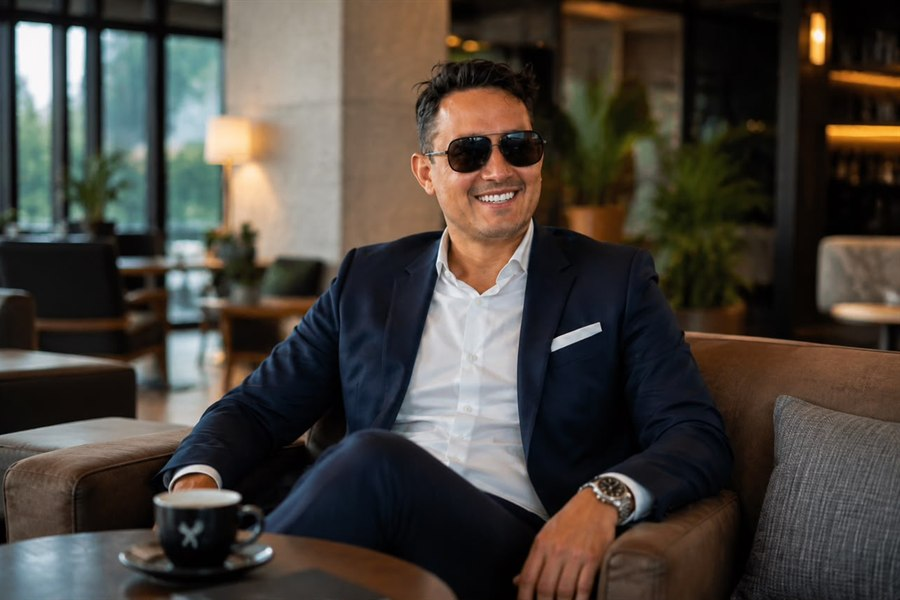

Londoño Guerrero: la operación como base real del crecimiento
Antes de sumar puntos de venta o abrir canales, ordenar los procesos internos. Es el criterio que se repite en las dos compañías en las que participa.

Crecer es fácil de anunciar y difícil de sostener. En las dos compañías en las que participa Alejandro Alfredo Londoño Guerrero —LONDINGHANM en moda y KEMONY en alimentación— el crecimiento se plantea como consecuencia de haber ordenado antes lo que ya se hacía.
La expansión no son más puntos de venta
En KEMONY el planteamiento es explícito: la expansión no se limita a incrementar la cantidad de puntos de venta. Contempla el fortalecimiento de procesos internos, la mejora de la logística, la coordinación entre las distintas áreas operativas y la implementación de mecanismos que permitan sostener el crecimiento de forma organizada.
Lo que se ordena antes de crecer
- Procesos internos y coordinación entre áreas
- Logística y cumplimiento de tiempos de entrega
- Relación con distribuidores y aliados comerciales
- Estándares de calidad que no se resientan al escalar
- Comunicación permanente con los socios
La misma lógica en la moda
En LONDINGHANM la traducción es distinta pero equivalente. La evolución de una marca no depende únicamente de un cambio de imagen: también se manifiesta en la forma en que se comprende al público, se presentan los productos, se organizan las operaciones y se toman decisiones.

Por eso el proceso incluye la reorganización de los canales de venta junto con la revisión de la comunicación, y no como dos proyectos separados.
Quién sostiene el crecimiento
El plan de KEMONY incluye el fortalecimiento de las relaciones con distribuidores, aliados comerciales y emprendedores del sector gastronómico, con el propósito de ampliar la disponibilidad de los productos y reforzar la presencia en distintos segmentos del mercado.
Es una parte poco visible del negocio y, según el propio planteamiento de la compañía, la que determina si la expansión se sostiene o se desinfla.